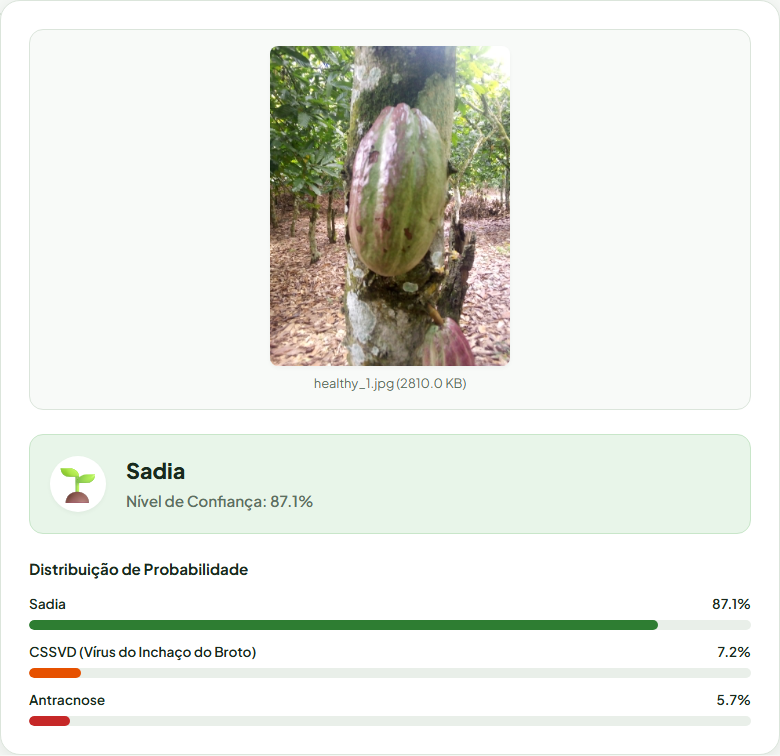
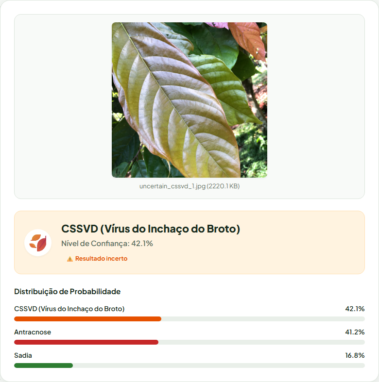
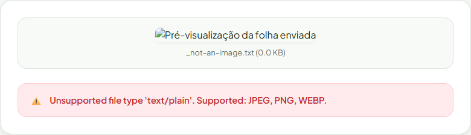

Pitch · CacauFito
Visão computacional que identifica CSSVD e antracnose em folhas de cacau antes que a doença se espalhe pela plantação.
Cada dia sem diagnóstico é um dia a mais de contágio na plantação
Dados públicos, coletados em campo, prontos para treinar
Um pipeline completo, não um modelo isolado
A rede: EfficientNet-B0 pré-treinada, com o backbone congelado. Só a última camada aprende a distinguir as 3 classes do cacau.
5.529 fotos não bastam para uma rede aprender visão do zero
O pipeline inteiro está aberto: do dado bruto ao modelo treinado.
Busca sistemática de learning rate e weight decay com Optuna
Melhor trial: lr = 0,00142, weight decay = 0,000126 com acurácia de validação de 0,793 em apenas 4 épocas.
Ganho pequeno, mas consistente, em quase toda métrica
| Métrica | Sem | Com | Δ |
|---|---|---|---|
| Acurácia teste | 0,778 | 0,781 | +0,3pp |
| Melhor val. | 0,799 | 0,802 | +0,3pp |
| F1 healthy | 0,765 | 0,768 | +0,3pp |
| F1 cssvd | 0,780 | 0,779 | −0,1pp |
| F1 anthracnose | 0,794 | 0,799 | +0,5pp |
| Recall cssvd | 0,747 | 0,765 | +1,8pp |
| Precisão healthy | 0,701 | 0,718 | +1,7pp |
Validando a hipótese com dados 100% públicos
0
Acurácia no teste, com Optuna
0
Confiança no caso mais nítido (sadia)
0
E quando está em dúvida, o app avisa
A aplicação real, rodando com o modelo treinado

Sadia, 87,1% de confiança
O app avisa, em vez de arriscar uma resposta confiante

CSSVD 42,1% vs Antracnose 41,2%: incerto
Erros são tratados com elegância, sem quebrar a aplicação

Sem login, sem custo, sem travar
Veja o código, teste o modelo, contribua
CacauFito · PPGTI · Aprendizagem Profunda